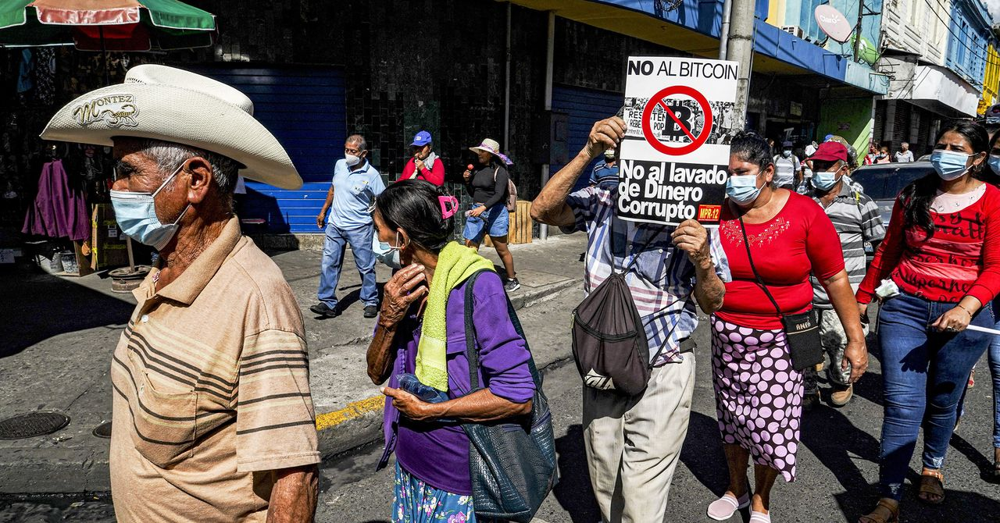

Bitcoin Is the Revolution: An Interview with Alex Gladstein
A wide-ranging interview on rights and money.
Featured Interview
Open ↗
Conversations
In-depth interviews on Bitcoin, democracy, and the infrastructure of open societies.
Featured
A wide-ranging interview on rights and money.
Interview on practical use cases.
Interview at Asia Blockchain Summit.
Chronological

Interview-style profile connecting HRF field work, open-source tools, and individual liberty.
Read moreConversation focused on real-world case studies from authoritarian and high-inflation regimes.
Read moreDeep dive on how activists in restrictive environments use Bitcoin in practice.
Read moreSubstantial written interview on Bitcoin, authoritarian finance, sanctions, and freedom.
Read more
Feature with Alex’s analysis of adoption, coercion risks, and civil-liberties tradeoffs.
Read more
Interview-backed analysis of monetary control in former French colonies.
Read more
Quoted interview contribution on speculative narratives versus monetary utility.
Read more
Video interview unpacking censorship resistance and grassroots fundraising.
Read moreLong-form interview on open-source money, privacy, and borderless access.
Read moreInterview with Laura Shin on censorship, aid delivery, and activist resilience.
Read more
Podcast interview on why open money matters most under state pressure.
Read moreAsia Blockchain Summit interview about freedom technology and civil society.
Read moreArchived from legacy alexgladstein.com.
Read moreArchived from legacy alexgladstein.com.
Read more